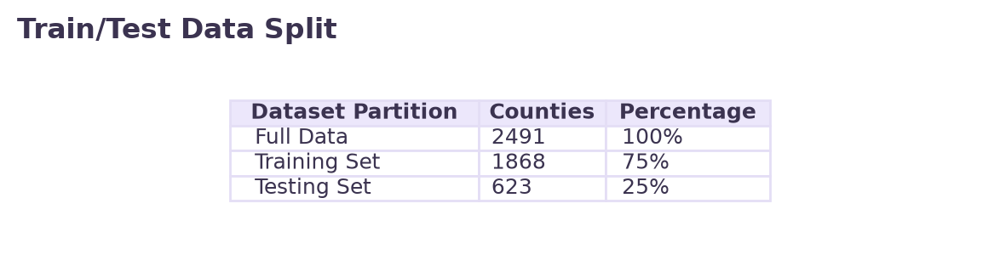
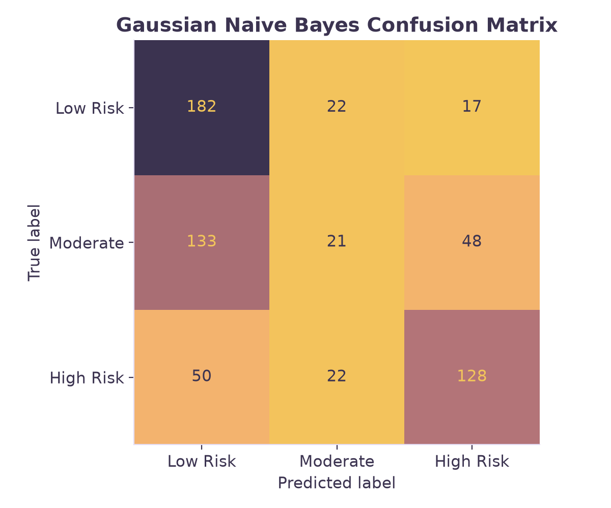

Overview
[WRITE HERE: Describe what Naive Bayes is and what it is used for. You MUST explicitly define and describe BOTH Multinomial NB and Bernoulli NB here.]

Data Prep
Prepared full dataset: clean_labeled_infant_risk.csv.
Training Set: nb_train.csv | Testing Set: nb_test.csv
[WRITE HERE: Explain what labeled data is, how you created the Train/Test sets (a 75/25 split), and explain why the training and testing sets MUST be disjoint (so the model is tested on unseen data).]



Code
The code for this section was written in Python utilizing pandas for data manipulation and scikit-learn (sklearn) for machine learning model implementation. The dataset features are numeric, fulfilling the requirement for Python's scikit-learn Multinomial Naive Bayes implementation.
View the code here: naive_bayes.py
Results
[WRITE HERE: Describe the results. Mention that the baseline guess accuracy was 35.47%, and your Multinomial Naive Bayes model achieved an accuracy of 59.23%. Discuss the confusion matrix below (e.g., how well it predicted High Risk vs Low Risk).]

Conclusions
[WRITE HERE: Explain what these results mean for maternal and infant health in US counties. What did the model learn?]